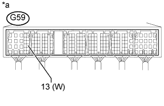

СИСТЕМА SFI > Цепь MIL |
| 1.УБЕДИТЕСЬ, ЧТО КОНТРОЛЬНАЯ ЛАМПА MIL ГОРИТ |
Установите замок зажигания в положение ON (ВКЛ).
Проверьте состояние лампы MIL.
| Условие | Следующий шаг |
| Контрольная лампа MIL продолжает гореть (лампа продолжает гореть по истечении нескольких секунд после включения зажигания) | А |
| Контрольная лампа MIL не включается (не горит) | B |
| Контрольная лампа MIL горит в течение нескольких секунд, но гаснет после запуска двигателя | C |
|
| ||||
|
| ||||
| А | |
| 2.ПРОВЕРЬТЕ, ВЫКЛЮЧАЕТСЯ ЛИ MIL |
Подсоедините портативный диагностический прибор к DLC3.
Включите зажигание.
Включите портативный диагностический прибор.
Войдите в следующие меню: Powertrain / Engine and ECT / DTC.
Проверьте, выводятся ли какие-либо DTC. Запишите их.
Сбросьте коды DTC (Нажмите здесь).
Убедитесь, что контрольная лампа MIL выключается.
|
| ||||
| OK | ||
| ||
| 3.ПРОВЕРЬТЕ ЖГУТ ПРОВОДОВ И РАЗЪЕМ (ПРОВЕРЬТЕ, НЕТ ЛИ КОРОТКОГО ЗАМЫКАНИЯ В ЖГУТЕ ПРОВОДОВ) |
Отсоедините разъем ЭБУ.
Установите замок зажигания в положение ON (ВКЛ).
Убедитесь, что контрольная лампа MIL не горит.
Подсоедините разъем ECM.
|
| ||||
| OK | ||
| ||
| 4.ПРОВЕРЬТЕ ЖГУТ ПРОВОДОВ И РАЗЪЕМ (ЩИТОК ПРИБОРОВ - ЕСМ) |
Отсоедините разъем щитка приборов.
Отсоедините разъем ЭБУ.
Измерьте сопротивление в соответствии со значениями, приведенными в таблице ниже.
| Подключение диагностического прибора | Условие | Заданные условия |
| G7-7 (CHK) или G59-13 (W) - масса | Всегда | 10 кОм или более |
Подсоедините разъем щитка приборов.
Подсоедините разъем ECM.
|
| ||||
| OK | ||
| ||
| 5.УБЕДИТЕСЬ, ЧТО ДВИГАТЕЛЬ ЗАПУСКАЕТСЯ |
Установите замок зажигания в положение ON (ВКЛ).
Убедитесь, что двигатель запускается.
| Результат | Следующий шаг |
| Двигатель запускается | А |
| Двигатель не запускается* | B |
|
| ||||
| А | |
| 6.ПРОВЕРЬТЕ ЩИТОК ПРИБОРОВ В СБОРЕ |
|  |
Отсоедините разъем ЭБУ.
Измерьте напряжение в соответствии со значениями, приведенными в таблице.
| Контакты для подключения диагностического прибора | Условие | Заданные условия |
| G59-13 (W) - масса | Замок зажигания в положении ON (ВКЛ) | 11-14 В |
| *a | Устройство с подсоединенным жгутом проводов (ECM) |
|
| ||||
| OK | ||
| ||
| 7.ПРОВЕРЬТЕ ЖГУТ ПРОВОДОВ И РАЗЪЕМ (ЩИТОК ПРИБОРОВ - ЕСМ) |
Отсоедините разъем щитка приборов.
Отсоедините разъем ЭБУ.
Измерьте сопротивление в соответствии со значениями, приведенными в таблице ниже.
| Контакты для подключения диагностического прибора | Условие | Заданные условия |
| G7-7 (CHK) - G59-13 (W) | Всегда | Менее 1 Ом |
Подсоедините разъем ECM.
Подсоедините разъем щитка приборов.
|
| ||||
| OK | ||
| ||